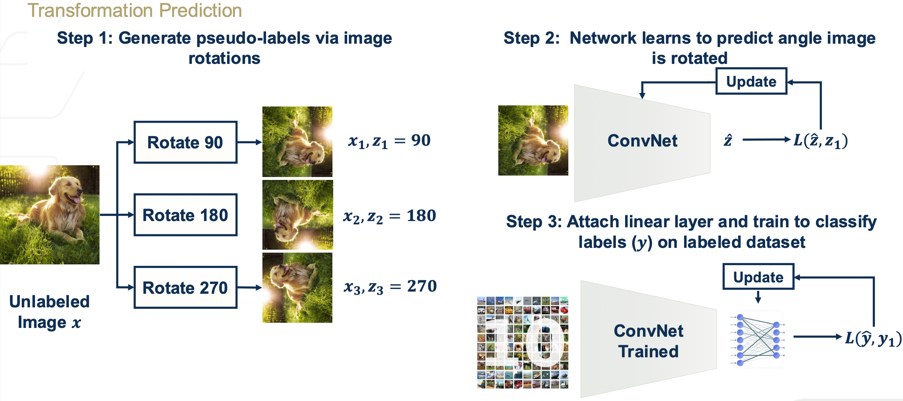
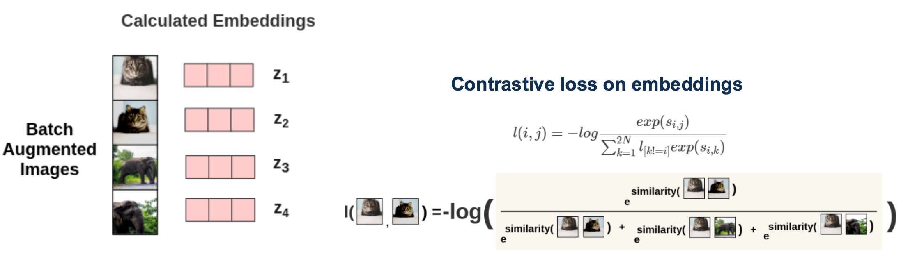
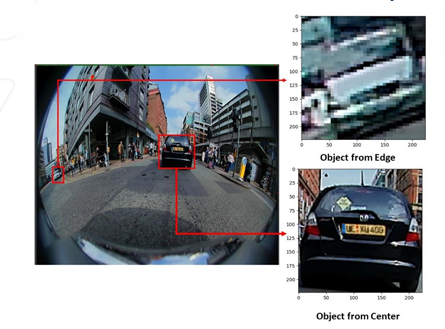
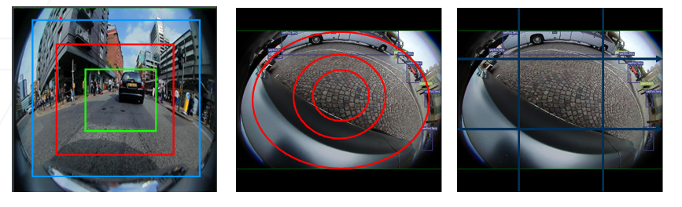
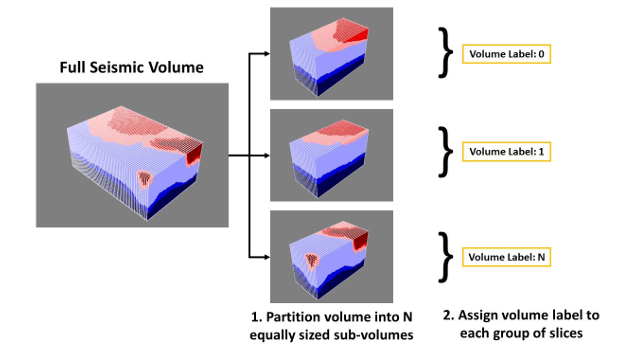
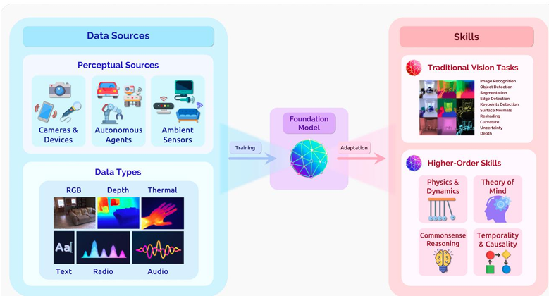

Contributors: Dr. Ahmad Mustafa, Dr. Motaz Alfarraj, Dr. Ashraf Alattar, Dr. Chen Zhou
Teaching Assistants with remarkable contributions include: Kuo-Wei Lai, Wuyang Du, Shiva Mahato, Michael Zhou, Ninghan Zhong
Disclaimer: All content of these notes are part of this course at Georgia Tech. Any re-use or distribution is not permitted without pre-approved permission. All these notes belong to, created by, and copyrighted for Ghassan AlRegib and Mohit Prabhushankar, Georgia Tech, 2021–2028.
License: These lecture notes are licensed under the Creative Commons Attribution-NonCommercial-ShareAlike 4.0 International License.
Errata: Please submit any errata you find using the following form: Errata Form for FunML Textbook or visit: https://forms.office.com/r/fbg9dMWPgY
1.1 Recap of Superviesd Learning
Supervised learning relies on labeled data to train models. It faces several challenges, leading to the exploration of alternative learning paradigms such as unsupervised and self-supervised learning.
High cost and time required for labeling large datasets.
Dependence on trained experts for specialized labeling tasks (e.g., medical or seismic data).
Data privacy regulations and restrictions, such as HIPAA, that limit access to labeled data.
Unreleased datasets and limited availability of high-quality labeled data.
1.2 Comparison of Data Requirements and Structures Summary (supervised, unsupervised, Self-supervised):
 [fig:comparison]
[fig:comparison]
Supervised Learning
Requires labeled datasets \((x, y)\), where \(x\) represents input data and \(y\) represents ground-truth labels.
The model directly learns a mapping \(f(x) \rightarrow y\) to minimize the loss function \(L\).
Unsupervised Learning
Requires only unlabeled data \(x\).
The model \(f\) learns the internal structure or distribution of the data and maps the input \(x\) to a reconstructed output \(\hat{x}\): \(f(x) \to \hat{x}\).
The loss \(L(\hat{x}, x)\) is computed based on reconstruction error or other objectives, guiding the model to better represent the characteristics of the data.
Self-Supervised Learning
Relies data \(x\) and on partially labeled data \(y\), and introduces pre-text tasks to generate pseudo-labels \(z\).
The model first learns a pre-text representation using pseudo-labels and then adapts the learned features for downstream tasks with limited data \(y\) (e.g., classification).
The "Pre-text Tasks" are what unique for Self-Supervised Learning than Unsupervised Learning
1.3 Self-Supervised Learning (SSL) Structure
Self-supervised learning (SSL) utilizes both labeled and unlabeled data to generate pseudo-labels and learn representations through pre-text tasks. Its structure can be summarized in three key steps:
Generate Pseudo-Labels
 [fig:comparison]
[fig:comparison]
Input:
Unlabeled data \((x_1, \dots, x_N)\).
Optionally, a small amount of labeled data \((x_1, \dots, x_M), (y_1, \dots, y_M)\).
Process:
Use a pre-text task \(P\) (e.g., rotation prediction, contrastive learning) to generate pseudo-labels \((z_1, \dots, z_N)\) for the unlabeled data.
Output:
Pseudo-labeled data: \((x_1, \dots, x_N), (z_1, \dots, z_N)\).
Pre-Training on Pseudo-Labels
 [fig:comparison]
[fig:comparison]
Input:
Pseudo-labeled data \((x_1, \dots, x_N), (z_1, \dots, z_N)\).
Process:
Train a neural network \(h_\theta\) using the pseudo-labels.
Minimize the loss \(L(z, \hat{z})\), where \(z\) is the pseudo-label and \(\hat{z}\) is the model prediction.
Output:
A pre-trained representation \(h_\theta\) capturing patterns in the unlabeled data.
Fine-Tuning for Downstream Tasks
 [fig:comparison]
[fig:comparison]
Input:
Pre-trained network \(h_{\theta^*}\).
Labeled data \((x_1, \dots, x_M), (y_1, \dots, y_M)\).
Process:
Use \(h_{\theta^*}\) as a feature extractor or initialize the weights for fine-tuning.
Attach a task-specific head (e.g., \(g_\phi\) for classification) and train on the labeled data to minimize \(L(\hat{y}, y)\), where \(\hat{y}\) is the prediction and \(y\) is the ground-truth label.
Output:
A fine-tuned model for the downstream task (original task like predicting the animal category).
1.4 Different Pre-text Tasks in Self-Supervised Learning
Different pre-text tasks enable the model to first learn various features of the images beyond the primary task, such as rotation, masking, brightness, noise, etc., to prepare for downstream prediction tasks. Unlike unsupervised learning, this approach avoids blind feature extraction by leveraging targeted auxiliary tasks.
1.4.1 Transformation Prediction
 [fig:comparison]
Pre-text task performs some transformation on data and tasks the model with trying to learn the nature of the transformation.
Example: Predict image rotation angles (e.g., 90°, 180°, 270°).
1.4.2 Masked Prediction
 [fig:comparison]
[fig:comparison]
Pre-text task removes some part of the data, and the model is tasked with trying to predict what was removed.
Example: Mask a specific region in an image and predict the missing region using an encoder-decoder structure.
1.4.3 Deep Clustering
 [fig:comparison]
[fig:comparison]
Identify clusters of features and iteratively assign pseudo-labels to train the model.
Process:
Extract features from unlabeled data.
Cluster the extracted features.
Use cluster assignments as pseudo-labels for supervised training.
1.4.4 Contrastive Learning
 [fig:comparison]
Pre-text task identifies positive and negative pairs of data, and the model is tasked with learning similarities to discriminate between positive and negative pairs.
Process:
Positive pairs: Different augmentations of the same data point.
Negative pairs: Augmentations from different data points.
Optimize a contrastive loss to maximize similarity within positive pairs and minimize it for negative pairs.
This Contrastive Learning is so important, and will be detailly talked about in following part.
1.5 Contrastive Learning Frameworks
1.5.1 SimCLR Framework
 [fig:comparison]
[fig:comparison]
SimCLR is a framework for contrastive learning that works by creating and learning from positive-negative pairs within batches. The process involves:
Image Augmentation: Generate similar pairs from the initial batch by applying augmentations to each image.
Encoding: Pass both original and augmented images through an encoder to obtain lower-dimensional representations (\(h_i\) and \(h_j\)).
Projection: Further compress these representations using a projection head to create embeddings (\(z_i\) and \(z_j\)).
Similarity Calculation: Compute cosine similarity between the generated embeddings.
Loss Computation: Calculate noise contrastive estimation loss for image pairs.
Batch Processing: Average the loss across all pairs in the batch.
1.5.2 Performance Comparison: Contrastive vs. Supervised Learning
 [fig:comparison]
[fig:comparison]
Recent developments show that contrastive learning algorithms like SimCLR have, in some cases, surpassed supervised learning performance.
Self-supervision at scale has become increasingly important.
Modern Approach: Utilize self-supervision for feature understanding, followed by supervised learning.
Large language models typically follow this pattern: initial self-supervised training followed by supervised fine-tuning.
1.6 Variations in Contrastive Learning Methods and Applications
1.6.1 Core Concept
The main differentiating factor between various contrastive learning methods is how they generate positive and negative pairs. Several creative approaches have emerged for constructing these pairs based on different contexts and requirements.
1.6.2 Example Applications
Fisheye Images
Approach: Treats regions within fisheye images as distinct classes.
 [fig:comparison]
Loss Components:
\(L_{\text{class}}\): Objects of the same class are positives regardless of position.
\(L_{\text{region class}}\): Objects in the same region are positives regardless of class.
Combined Loss: \(\alpha L_{\text{class}} + (1-\alpha) L_{\text{region class}}\)
Alternative Partitioning Methods:
Square-based divisions
Radial partitioning
Grid-wise (9-class) segmentation
 [fig:comparison]
Seismic Images
 [fig:comparison]
Pre-text Task: Volume label classification.
Process:
Partition the full seismic volume (generally \(100 \text{ km} \times 100 \text{ km} \times 25\) km).
Divide into \(N\) equal sub-volumes.
Assign volume labels to slice groups.
Medical Images
 [fig:comparison]
[fig:comparison]Pre-text Task: Classification based on patient ID or clinical labels.
Positive-Negative Pairs: Determined by patient identity or clinical characteristics.
1.6.3 Contrastive Learning in Other Modalities
Beyond computer vision, contrastive learning has been successfully applied to:
Textual models (e.g., NLP)
Audio processing models
 [fig:comparison]
[fig:comparison]This demonstrates the versatility of contrastive learning across different data types and applications.
1.7 Foundation Models
1.7.1 Recent Developments
Segment Anything Model (SAM):
 [fig:comparison]
[fig:comparison]Released by Meta (April 2023).
Trained on 1.1 billion segmentation masks from 11 million images.
1.7.2 Historical Evolution
Pre-2019:
Primary architectures: ResNets, VGG.
Post-2019:
New architectures: BERT, DALL-E, GPT, Flamingo.
Key changes: Introduction of transformer architectures and self-supervision.
1.7.3 Applications and Impact
 [fig:comparison]
Foundation models leverage transfer learning at scale.
Scale enables emergence of common properties across tasks.
Potential Applications:
Healthcare
Embodied interactive perception
Visual knowledge distillation
Temporal and commonsense reasoning
1.8 Key Insights and Conclusions
1.8.1 Pseudo-Label Generation
Relies heavily on creativity.
Must maintain a relationship with original labels.
Feature extraction between pseudo and original labels should yield similar or related features.
1.8.2 Future Directions
Self-supervision at scale has become a crucial component in modern AI systems.
Continued evolution of foundation models and their applications.